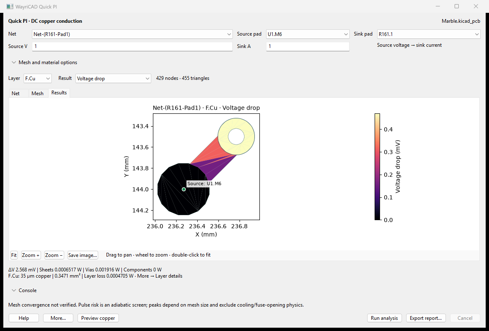
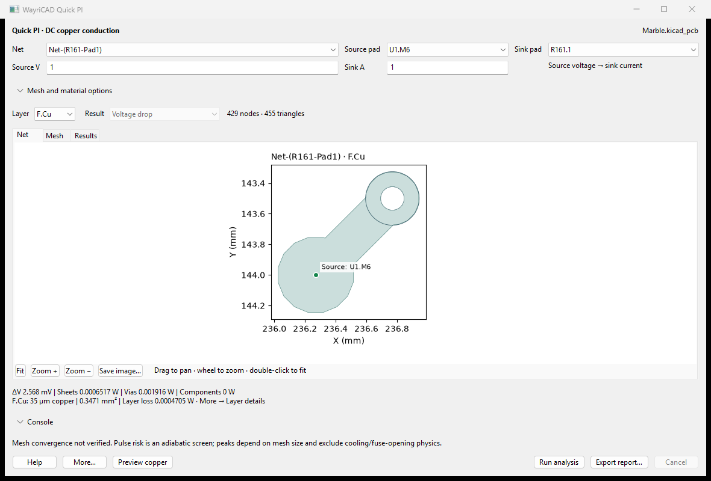
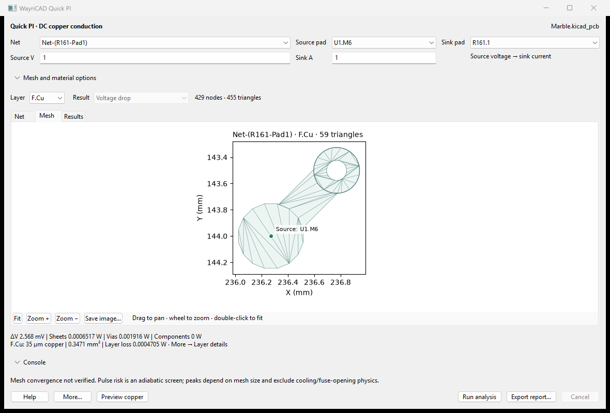
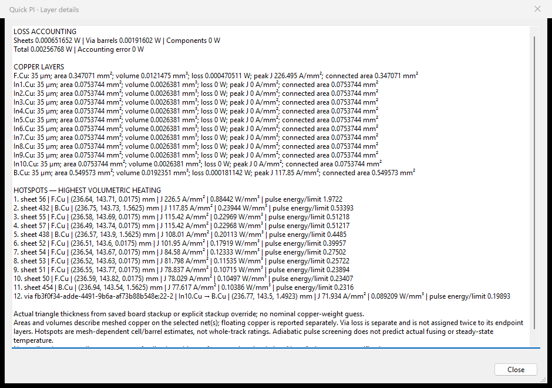

Run a path · Previews · Layer details · Console · CLI · Troubleshooting
Quick PI estimates voltage drop and current flow through saved traces, filled zones, pads and plated via barrels. It solves 2.5D DC conduction locally and leaves the PCB unchanged. It does not solve AC fields, transient inductive behavior or a thermal field.

Screenshot scope: Berkeley Marble's small Net-(R161-Pad1) connection, U1.M6 to R161.1, at 1 V / 1 A. This is not a power-rail or full-board loading test. Computed drop is about 2.568 mV: 0.652 mW in sheets and 1.916 mW in via barrels. It is a regression result, not a physical measurement or mesh-convergence certificate.
| View | Purpose |
|---|---|
| Net | Check actual copper, terminals and drill holes before interpreting results. |
| Mesh | Inspect triangle resolution, narrow necks and contact boundaries. |
| Results | Choose absolute voltage, drop, current density, current-flow arrows, loss density, pulse screen or DC transfer resistance. |


Drag to pan, scroll to zoom and use Fit to restore the extent. More → Zoom to circuit terminals focuses the chosen pads. More → Refine mesh and rerun halves the edge length. Compare resistance and peak density across refinements; localized peaks can remain sensitive after total resistance stabilizes.
Copper thickness comes from each saved stackup layer, not a nominal copper-weight guess. It controls conductance and copper thermal mass. Missing or ambiguous stackup data stops the run. Via plating defaults to an assumed 25 µm and is separately configurable.

The detail window lists layer area, volume, connected area, thickness and peak current density, then ranked local heating hotspots with XYZ locations. Sheet, via-barrel and component losses are separate. Floating copper remains in geometry area but has no connected loss result. The HTML report includes these details.
ΔV/I is the solved path resistance. Source V/I describes the operating point and is not copper resistance. Sheet current is A/mm; current density is A/mm². The pulse screen compares deposited energy with energy to reach the entered temperature limit without cooling. A ratio above one is not a fuse-time prediction. Heat spreading, temperature feedback, melting and fuse-opening physics are excluded.
Expand Console. Use help, nets, or pads <net>. Tab cycles completions; Up/Down recalls commands. This is a bounded command interface, not Python or a shell.
run pi "Net-(R161-Pad1)" U1.M6 R161.1 run pi U1.M6 R161.1 5m R161.2 U1.M5 run pi U1.M6 R161.1 5mH+30m R161.2 U1.M5
Values in the last two examples are explicit user assumptions for that component: 5 mΩ, or 5 mH plus 30 mΩ. They do not identify the actual fitted R161 automatically. Inductance adds no steady-state DC voltage drop; stored magnetic energy is reported. Component links are dashed, not invented PCB tracks. Source voltage/current and material settings use the visible controls.
Engineering notation supports milli m, mega M/Meg, u/µ, n, p, scientific notation, and explicit H/ohm/Ω units. Pads such as C1.1, U8.2 and Q2.3 must resolve unambiguously.
Install the suite wheel for wayricad-pi. From a source checkout use python -m quick_pi_plugin.cli instead.
wayricad-pi --help wayricad-pi board.kicad_pcb wayricad-pi board.kicad_pcb --net "Net-(R161-Pad1)" --source U1.M6 --sink R161.1 --voltage 1 --current 1 --mesh-edge 0.5 --pulse 1 --temperature-limit 150 --html pi.html wayricad-pi board.kicad_pcb --command "run pi U1.M6 R161.1 5mH+30m R161.2 U1.M5" --html series.html
The board-only command lists nets/pads/layers. Replace sample names with those on your board. Mesh edge and plating are mm; pulse is seconds; temperatures are °C. Without a CLI pulse duration, thermal screening requests one. HTML requires a completed solve. Exit 0 means execution succeeded, not that the electrical design or convergence passed.
| Problem | Action |
|---|---|
| Missing stackup | Save explicit copper/dielectric thicknesses in Board Setup. |
| Unfilled zones | Refill and save in KiCad. |
| Disconnected terminals | Check pad/net selection, actual copper continuity and filled contacts. Cross-net paths need explicit series components. |
| Mesh budget or timeout | Use a larger mesh edge or smaller net, then refine gradually. |
| Dependency setup | Read the reported setup log; check KiCad 10 Python and package-mirror/proxy/offline-wheel configuration. |
| Wrong/stale project | Save and launch from the intended PCB Editor. Each action retains that editor's IPC connection. |
All screenshots and help assets are bundled locally. Numerical dependencies are prepared in a private user cache; the first setup may need network access. A complete KiCad 10 installation is required. KiCad 11 live operation is not certified.